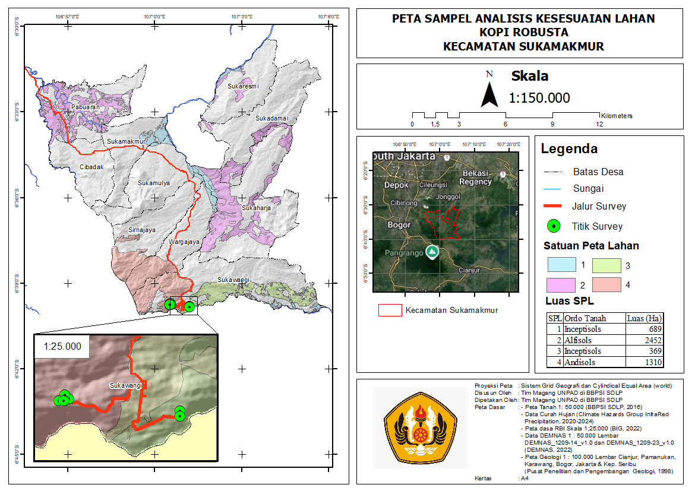
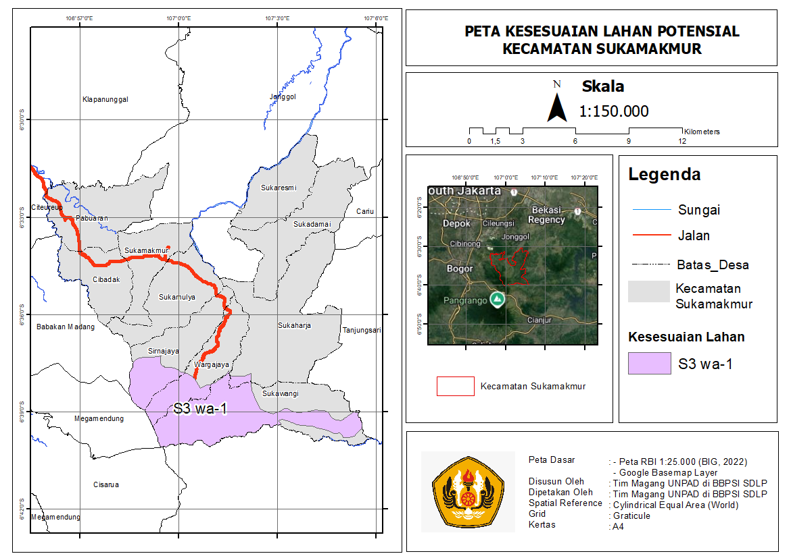

Mengeksplorasi jembatan antara analisis spasial tingkat tinggi dengan antarmuka web modern yang bersih dan responsif.
Tentang SayaGIS Specialist & Analyst
Lulusan Universitas Padjadjaran dengan latar belakang Agroteknologi yang memiliki gairah besar dalam Sistem Informasi Geografis (SIG) dan pemantauan lingkungan. Saat ini berdedikasi sebagai spesialis data geospasial untuk Kementerian Pertanian Republik Indonesia, berfokus pada pemetaan tematik ketahanan pangan, manajemen basis data keruangan, serta eksplorasi teknologi WebGIS.
| Nama | Alvito Krishna Balapradhana |
| Domisili | Kota Bekasi, Jawa Barat, Indonesia |
| Status Profesional | Field Assistant / GIS Specialist & Analyst — Kementerian Pertanian RI |
WebGIS Development Bootcamp • Studi intensif pemrograman antarmuka (HTML, CSS, Tailwind) dan integrasi data geospasial interaktif.
Field Assistant / GIS Specialist & Analyst • Jakarta Selatan
Bachelor of Science (S.Agr.), Agrotechnology • IPK: 3.40
High School Diploma • Bogor
Lisensi & Sertifikasi Profesional
Pengolahan Geospasial & Web
Teknik Lapangan & Analisis
Dunia geospasial biasanya sangat bergantung pada perangkat lunak berat seperti Google Earth Engine, ArcGIS, atau QGIS untuk mengolah data dan menghasilkan analisis yang akurat. Namun, ada satu kendala utama: sebagus apa pun analisis peta yang dibuat, dampaknya tidak akan maksimal jika hanya bisa dibaca dan dipahami oleh sesama teknisi.
Kebutuhan untuk membuat data geografis lebih mudah diakses oleh publik menuntut adanya media yang lebih fleksibel. Hal inilah yang mendorong peralihan dari sekadar menggunakan aplikasi peta desktop menuju pengembangan WebGIS—peta interaktif yang bisa diakses langsung melalui peramban web (browser).
Proses membangun WebGIS membutuhkan keterampilan baru dalam pemrograman web (front-end). Berikut adalah tahapan transisi tersebut:
Mempelajari HTML bisa diibaratkan seperti menyiapkan kanvas kosong atau peta dasar (basemap). Ini bukan lagi tentang menumpuk lapisan gambar (layer), melainkan menyusun kerangka informasi.
Setelah kerangka terbentuk, CSS digunakan untuk memberikan bentuk dan keindahan visual. Mengatur warna, jarak, dan tata letak elemen menggunakan CSS membutuhkan ketelitian.
Cara kerja menjadi jauh lebih efisien ketika mengadopsi Tailwind CSS. Pembuatan dashboard peta yang responsif dapat dilakukan dengan sangat cepat.
Visualisasi data spasial statis dan pengembangan WebGIS Interaktif.

